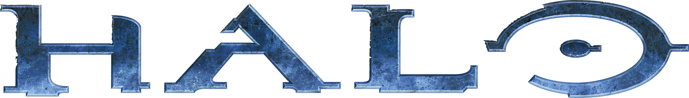

ESports were popularized by first person shooters in the early 2000s, although nowadays they do not get many views as the new more popular eSports genres. First Person Shooters do not get many viewers because the restrictions on viewer experience. First Person Shooters in eSports can only give the spectators the view of the players, so you cannot see much of the gameplay and what is going on throughout the game. FPS games like Halo and Call of Duty also get new releases every year or two years so the eSports have to update every time a new game comes out. Counter Strike: Global Offensive on the other hand was released in 2012, and has had regular updates ever since, which allows the eSports to keep the changes to a minimum. Halo and Call Of Duty are streamed on MLG, while CS:GO is streamed on Twitch.
| Current Developers | FPS eSport Games | Footage |
 |
 |
CSGO Dreamhack winter 2014 finals |
|  | Halo Youtube Page |
|
 |
 |
Call Of Duty eSports Youtube Page |
With any sport, there are always scandals. One of CSGO's main features are the gun skins that are purchased and found in unlockable crates using real money, or traded in the market place. Players can bet on CSGO eSport games with those gun skins, and if they win they get better, more expensive guns back. Some teams have used this to their advantage. They have bet thousands of dollars worth of skins on the other team, and then they throw to match in order to obtain more money in skins than they would have gotten by winning the match. The head of CSGO eSports bans any team caught doing this, and takes back the skins.